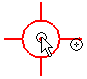
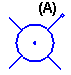
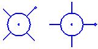

Rotate a mounting boss profile
You can rotate the mounting boss profile, which is useful for a mounting boss which has ribs defined.
-
In the graphics window, position the cursor at the center of the mounting boss profile you want to rotate. When the mounting boss profile highlights, right-click to display the shortcut menu.

-
On the shortcut menu, click Properties.
-
On the Mounting Boss Properties dialog box, in the Angle box, type the rotation value you want, then click OK.
-
One of the legs on the mounting boss profile has a dot (A) to indicate the rotation angle of the profile.

-
When a mounting boss feature consists of multiple profiles, you can define a unique rotation angle for each profile in the feature.

-
All mounting bosses constructed as part of the same feature must have the same parameter settings, such as boss diameter, number of stiffening ribs, and draft angle. For mounting bosses with different parameters, construct another feature.
-
The IntelliSketch command supports horizontal and vertical alignment for the center points of mounting boss profiles. When you place a mounting boss profile and the center point input recognizes a horizontal or vertical alignment with the center point of another mounting boss profile, the horizontal or vertical alignment relationship is applied.